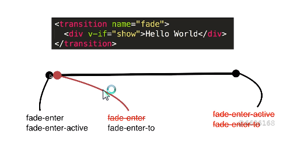
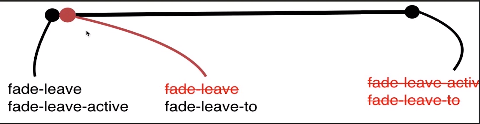

hello world

从不显示到显示状态:当一个元素被transition包裹之后，Vue会自动的分析元素的css样式，然后构建一个动画的流程，Vue会做一个事情，在动画即将被执行的这一瞬间，它会往内部的div上增加两个class的名字，分别是fade-enter和fade-enter-active，当动画第一帧执行结束后，Vue分析过知道它是一个动画效果时候，Vue会在动画运行到第二帧，Vue会把fade-enter去掉，然后再增加一个fade-enter-to，然后动画 会继续执行，执行到结束的这一瞬间，Vue会把之前添加的fade-enter-active和fade-enter-to去除掉
从显示到隐藏状态：Vue会帮你构建一个隐藏的动画流程，Vue会帮你在这个div标签上增加class叫做fade-leave和fade-leave-active，第二帧的时候会去掉fade-leave，增加一个fade-leave-to，最后它会把fade-leave-active和fade-leave-to都去掉。